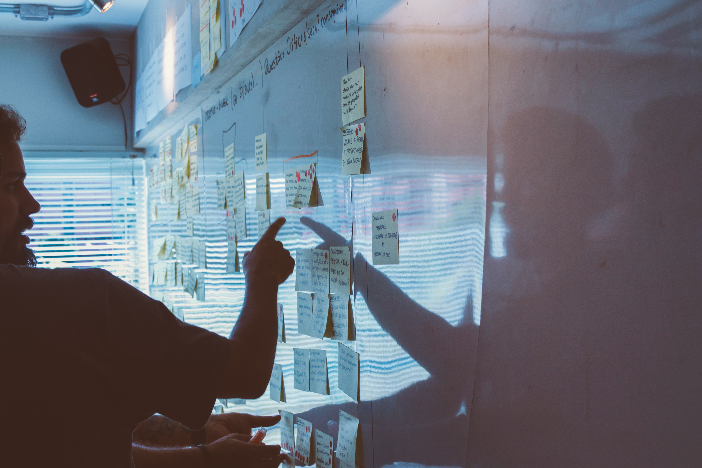

Observando o cenário atual do mercado de trabalho nos mais variados seguimentos, podemos perceber um problema que vem se tornando, talvez, um dos maiores bloqueios de crescimento e inovação para as empresas; o famoso turnover, ou carinhosamente conhecido como o terror do RH.
Como indicado por diversos estudos, e nitidamente observado pelos envolvidos dentro das próprias empresas, a maior dificuldade aparente neste momento é a de manter, ou criar engajamento real de seus colaboradores, o que acaba por gerar diferentes prejuízos para as mesmas.
A medida em que este cenário se fortalece, se torna cada vez mais necessário que haja dentro das organizações uma cultura que instigue seus colaboradores a permanecer ali e, a médio e longo prazo, proporcionar inovações e o crescimento da instituição
Apesar da complexidade de alguns casos, sem dispensar os fatores externos, é possível elaborar alguns caminhos iniciais para este processo de aprimoramento.
De uma forma resumida, poderíamos partir do setor que apresenta maior número de colaboradores, a fim de recolher variadas informações que servirão como base para comparativo em tópicos isolados.

Interação
Fase de aquisição de informações referentes ao contexto geral.Planejamento
Análise de prioridades e planejamento de iniciativas conjuntas.
Implementação
Aplicação de medidas a curto prazo em prol de aprimoramento gradativo.Como dito anteriormente, não se pode deixar de fora desta análise os fatores externos a este contexto, porém, para identificar os diferenciais competitivos que podem ser aplicados para gerar uma cultura evolutiva, é necessário antes ter conhecimento de pontos negativos a serem corrigidos e positivos a serem fortalecidos.
Através de planos de ação baseados na leitura de informações adquiridas de forma que deixe claro a intenção de progresso, é possível direcionar novas práticas de colaboração, capazes de expandir as possibilidades de melhorias continuas.